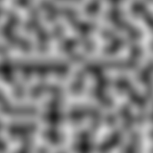
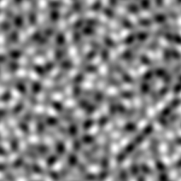
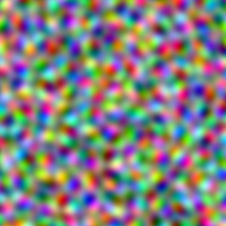

noise: Perlin/Simplex noise generators
This package provides Racket versions of the Perlin and Simplex noise generators.
Development Development of this library is hosted by GitHub at the following project page:
https://github.com/jpverkamp/noise/
1 Installation
raco pkg install noise
2 Functions
3 Examples
> (require images/flomap racket/flonum noise)
> (define (clamp min max n) (/ (- n min) (- max min)))
> (define (build-perlin-image w h #:scale [scale 1.0]) (flomap->bitmap (build-flomap* 3 w h (lambda (x y) (define g (clamp -1.0 1.0 (perlin (* scale (/ x w)) (* scale (/ y h))))) (vector g g g))))) > (build-perlin-image 256 256 #:scale 10.0) 
> (define (build-simplex-image w h #:scale [scale 1.0]) (flomap->bitmap (build-flomap* 3 w h (lambda (x y) (define g (clamp -1.0 1.0 (simplex (* scale (/ x w)) (* scale (/ y h))))) (vector g g g))))) > (build-simplex-image 256 256 #:scale 10.0) 
> (define (build-colored-simplex-image w h #:scale [scale 1.0]) (flomap->bitmap (build-flomap* 3 w h (lambda (x y) (vector (clamp -1.0 1.0 (simplex (* scale (/ x w)) (* scale (/ y h)) -1.0)) (clamp -1.0 1.0 (simplex (* scale (/ x w)) (* scale (/ y h)) 0.0)) (clamp -1.0 1.0 (simplex (* scale (/ x w)) (* scale (/ y h)) 1.0))))))) > (build-colored-simplex-image 256 256 #:scale 10.0) 
4 License
This program is free software: you can redistribute it and/or modify it under the terms of the GNU Lesser General Public License as published by the Free Software Foundation, either version 3 of the License, or (at your option) any later version.
This program is distributed in the hope that it will be useful, but WITHOUT ANY WARRANTY; without even the implied warranty of MERCHANTABILITY or FITNESS FOR A PARTICULAR PURPOSE. See the GNU General Public License and GNU Lesser General Public License for more details.